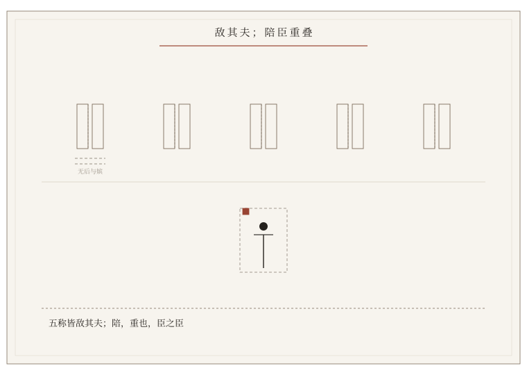

曲礼下 · 二·五十八 · 第 181 课
天子之妃曰后，诸侯曰夫人，大夫曰孺人，士曰妇人，庶人曰妻。公侯有夫人、世妇、妻、妾。夫人自称于天子曰老妇，于诸侯曰寡小君，于其君曰小童；自世妇以下称婢子。子于父母自名。列国大夫入天子之国曰某士，自称陪臣某，于外曰子，于其国曰寡君之老；使者自称曰某。
说什么事：内之称、臣之称，两套自称之法。
落在哪一层：礼，兼及礼意。论「敌其夫」与「重臣」。
为何编在此位：上节论行容，此节论妃妾与列国大夫之称。一内一外，收前诸节之称谓。
【经】天子之妃曰「后」，諸侯曰「夫人」，大夫曰「孺人」，士曰「婦人」，庶人曰「妻」。公、侯有夫人，有世婦，有妻，有妾。夫人自稱於天子曰「老婦」，自稱於諸侯曰「寡小君」，自稱於其君曰「小童」，自世婦以下，自稱曰「婢子」。子於父母，則自名也。列國之大夫，入天子之國曰「某士」，自稱曰「陪臣某」。於外曰「子」，於其國曰「寡君之老」。使者自稱曰「某」。
【注】后之言後也。夫之言扶。孺之言屬。婦之言服。妻之言齊。貶於天子也，無后與嬪，去上中。自稱於天子，謂畿內諸侯之夫人助祭，若時事見。寡小君，謂饗來朝諸侯之時。小童，若云未成人也。婢之言卑也。名，父母所為也，言子者，通男女。亦謂諸侯之卿也，三命以下，於天子為士。陪，重也。子，有德之稱。某，名也。
【疏】「天子之妃曰后」以下，皆敌其夫，如王之后，故以后居前耳。妃，邦君之合配，王诸侯以下，通有妃义，故以妃字冠之。《特牲》《少牢》是大夫士之礼，皆云某妃配某氏，尊卑通称也。《白虎通》云：「后，君也，明配至尊，为海内小君，天下尊之。」「诸侯曰夫人」者，夫人之名，唯诸侯得称，《论语》云「邦君之妻，邦人称之曰君夫人」是也。「大夫曰孺人」者，孺，属也，言其为亲属。「士曰妇人」者，妇之言服也，服事其夫也，其号亦上下通名，故《春秋》「逆妇姜于齐」。「庶人曰妻」者，妻之言齐也，庶人贱，无别称，判合齐体而已；若通而言之，则贵贱悉曰妻，故《诗》曰「刑于寡妻」。「公侯有世妇」者，谓夫人之侄娣，其数二人；「有妻」者，谓二媵及侄娣也，凡六人；「有妾」者，谓九女之外，别有其妾。「夫人自称于天子曰老妇」，此「夫人」谓畿内诸侯之妻也，其助祭于天子则称老妇。「自称于诸侯曰寡小君」，谓飨来朝诸侯之时。「自称于其君曰小童」，若云未成人也。「自世妇以下自称曰婢子」，婢之言卑也。「列国之大夫入天子之国曰某士」，亦谓诸侯之卿也，三命以下于天子为士。曰某士者，如晋韩起聘于周，摈者曰「晋士起」。「自称曰陪臣某」，陪，重也，其君已为王臣，己今又为己君之臣，故自称对王曰重臣；若襄二十一年晋栾盈辞于行人曰「天子陪臣盈」是也。「于外曰子」，亦摈者辞，外谓在他国时也，摈者则称其姓而曰子，子是有德之称，故注引闵公二年冬「齐高子来盟」。「于其国曰寡君之老」，其国，自国中也。「使者自称曰某」，若此卿为使，在他国与彼君语，则称名也。
妃 疏「邦君之合配」，通称。故「以妃字冠之」。
后 注「后之言後也」。《白虎通》「后，君也」。
夫人 注「夫之言扶」。唯诸侯得称。
孺人 注「孺之言属」。
妇人 注「妇之言服」，服事其夫。
妻 注「妻之言齐」，判合齐体。
陪臣 注「陪，重也」。君已为王臣，己又为己君之臣。
天子之妃称「后」，诸侯称「夫人」，大夫称「孺人」，士称「妇人」，庶人称「妻」。公侯有夫人、世妇、妻、妾。夫人对天子自称「老妇」，对诸侯自称「寡小君」，对自己的君自称「小童」；世妇以下自称「婢子」。子女对父母自称名。列国大夫入天子之国称「某士」，自称「陪臣某」；在他国称「子」，在本国称「寡君之老」；出使自称名。
此节两半：前半是内之称，一字一训；后半是臣之称，一层一辞。前半的关节在「敌其夫」三字，后半的关节在「陪臣」二字——一个人可以同时是臣与臣之臣。
第一层 敌其夫 疏「皆敌其夫，如王之后」。五位之称不是五个等级的妇德，是与夫相对的位。礼把夫妇之名配成对，一高一低而相敌。
第二层 一字一训 后训後，夫训扶，孺训属，妇训服，妻训齐。五字五义，皆取其事，不取美称。此与前「天子之妃」一节的写法一致：礼的称谓从职分来。
第三层 贬于天子 注「贬于天子也，无后与嫔，去上中」。诸侯有夫人、世妇、妻、妾，去掉了「后」与「嫔」两头。数目之减，即是位次之降。
第四层 三称与一称 夫人对天子称老妇、对诸侯称寡小君、对君称小童；世妇以下只一称，婢子。越卑者，可用的自称越少。礼在称谓上是吝啬的。
第五层 陪臣之义 疏「其君已为王臣，己今又为己君之臣，故自称对王曰重臣」。此一语点出封建之叠：臣之臣，对天子而言仍是臣，只是隔了一层。
与今日何干 一个人在大组织里对上级的上级说话，自称与对直接上级说话不同。陪臣之礼，今天仍在。
| 左 | 右 |
|---|---|
| 天子之妃曰后 | 后之言後 |
| 诸侯曰夫人，大夫曰孺人 | 夫之言扶，孺之言属 |
| 士曰妇人，庶人曰妻 | 妇之言服，妻之言齐 |
| 公侯无后与嫔 | 贬于天子，去上中 |
| 老妇、寡小君、小童 | 夫人之三称，各有其时 |
| 陪臣某 | 陪，重也，臣之臣 |
画上下两层。上层五对并立的小竖牌，两两成对、高低相依（示「敌其夫」，五位之称各有其配）；其中最高一对之下画两道虚线短杠（示「无后与嫔」，两头皆缺）。下层一人形居中，其外再画一人形包住前者（示「陪臣」之重叠），外者肩上另置一枚小方点。两层之间以一道细横线相隔。不写文字。赭色只用在最内那个人形的肩上小点。
